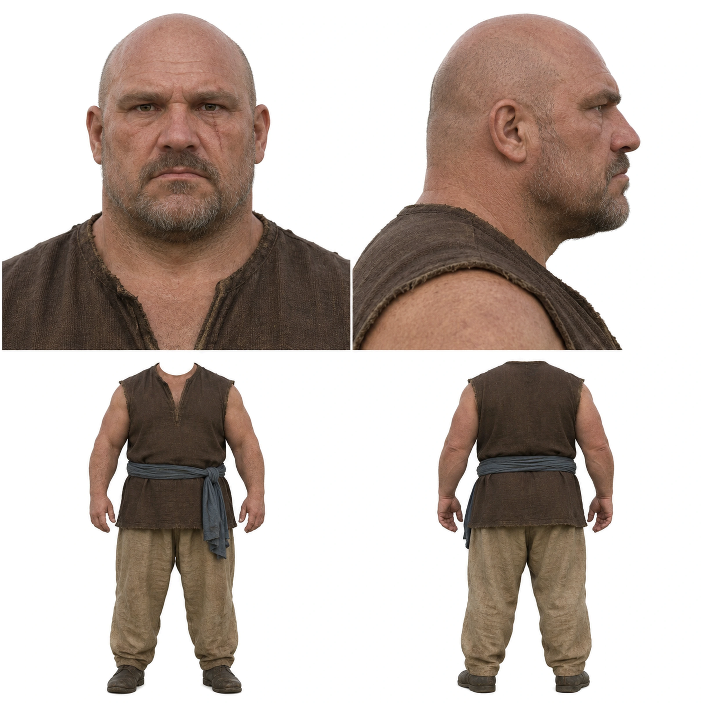
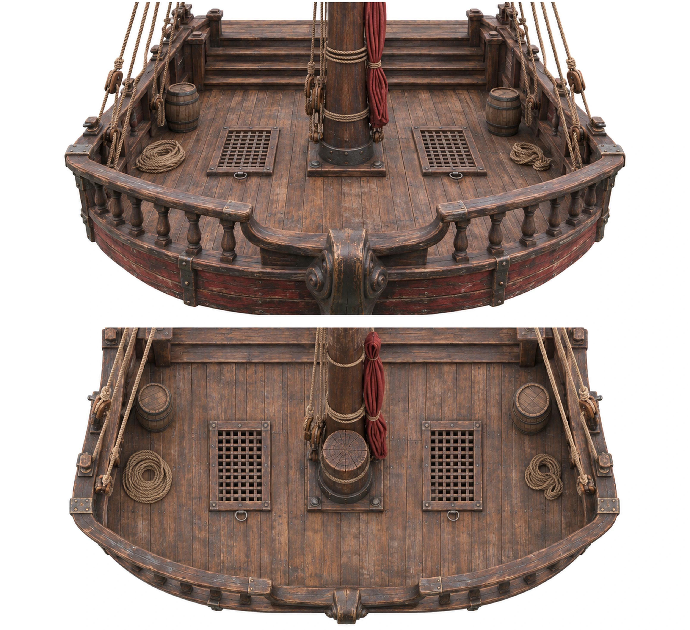
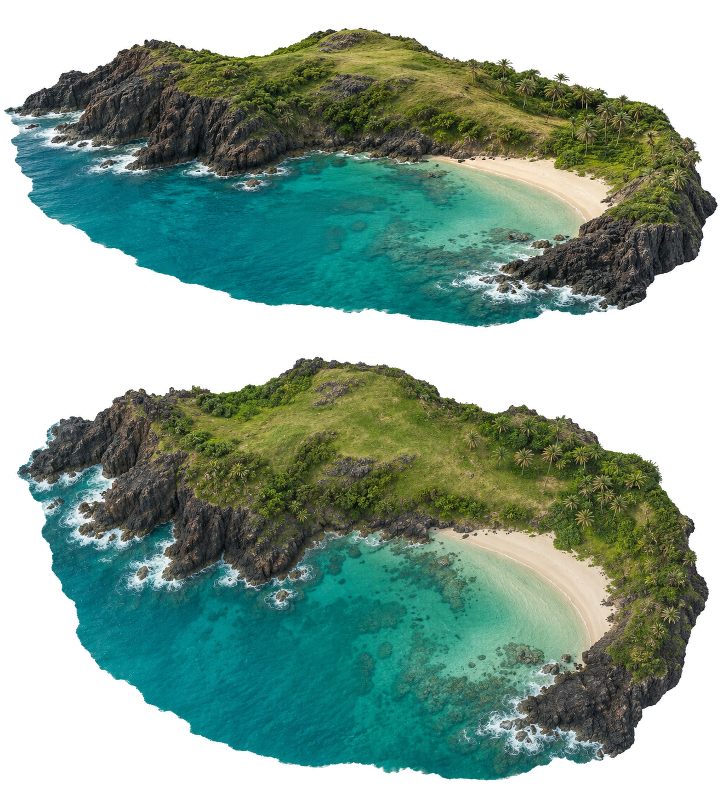
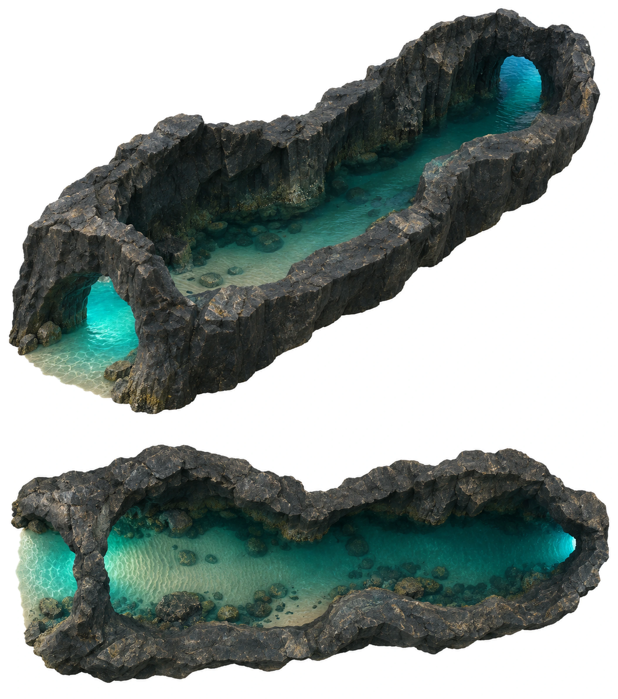
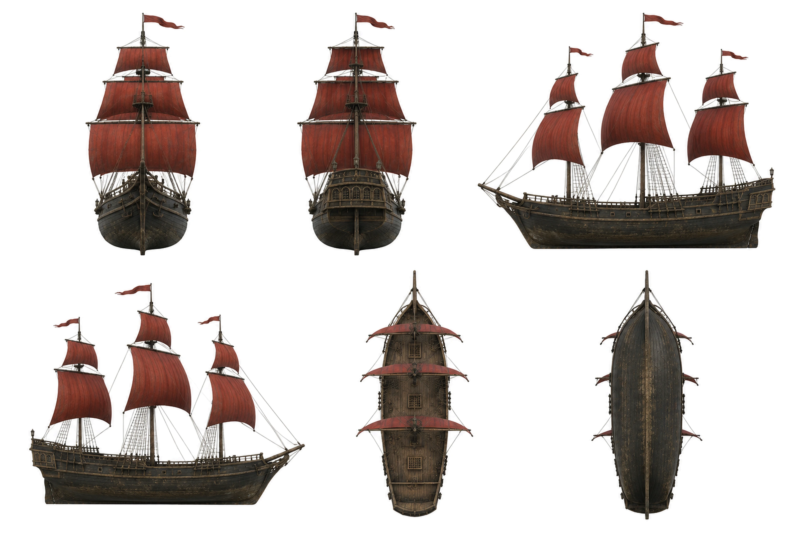
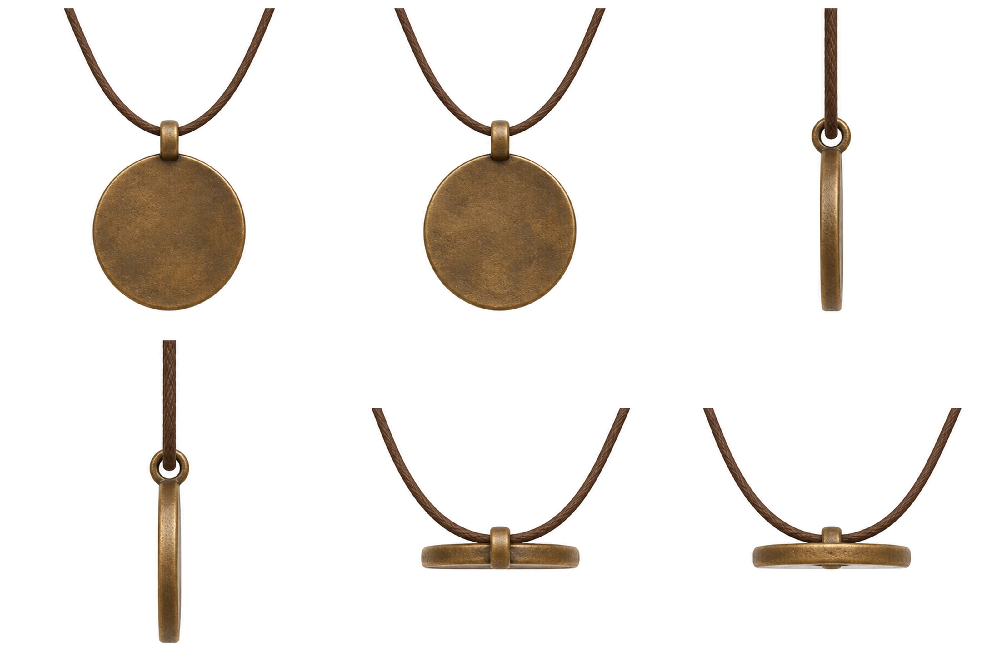
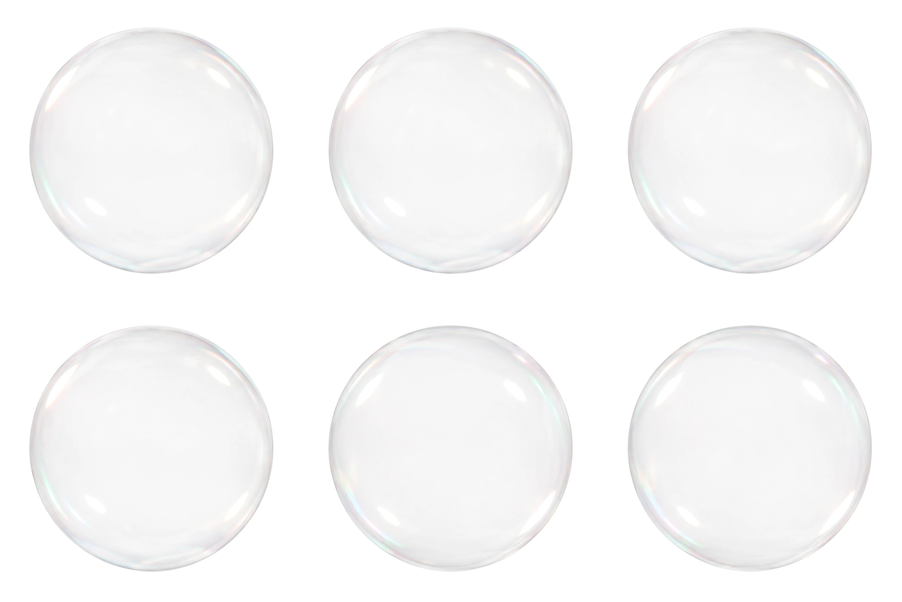
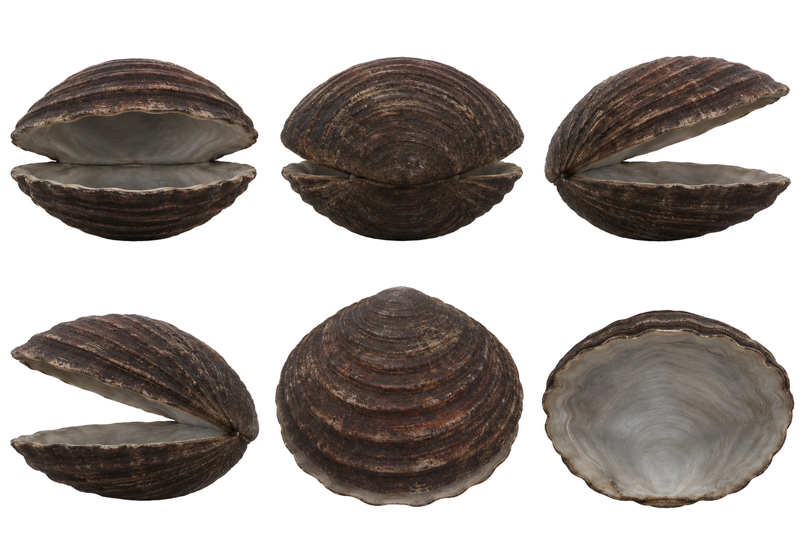
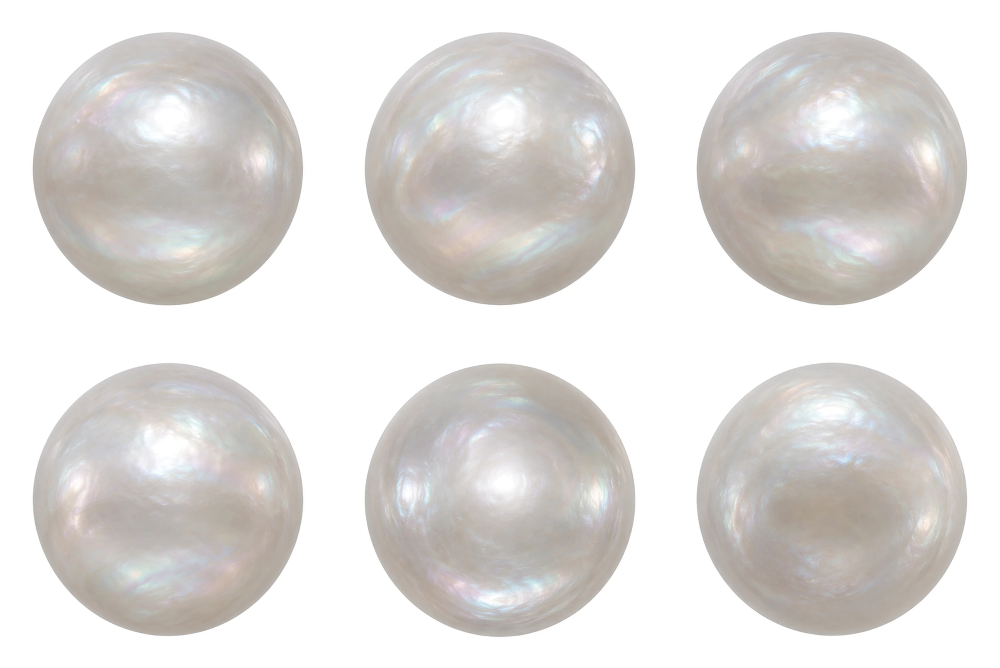
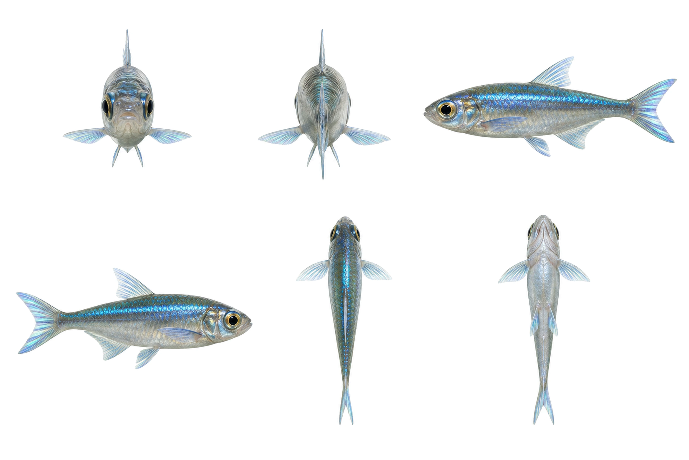

国外短剧
The Tide Keeper · 第二集
正在连接在线视频…
视频简介
红帆船逼近岛岸，船长通过望远镜认出鲨裔守护者。守护者带红发女子潜入浅水，用透明气泡护她呼吸，两人穿过游鱼环绕的岩隧。岩隧尽头是一座带微光的洞湖，半开的巨蚌中藏着月光珍珠。
在快手观看原视频 ↗制作资产
角色资产
红发落难女子
被冲上海滩的女子，从对陌生守护者的畏惧，逐步转为主动处理他的伤处。 铜红长卷发、淡灰蓝亚麻长裙、暗棕束腰和小圆吊坠。海滩赤足，湿发到结尾仍保持同一分线。 成片未完整展示的方位按可见造型补全。
鲨裔守护者
岛上强壮的两栖守护者，先以鱼尝试接近女子，后在潮池替她挡住巨蟹。 背鳍、大尾、灰蓝条纹皮肤、墨色长发与海草围裙。靠近时放慢动作，格斗后让伤腕保持同一侧。 成片未完整展示的方位按可见造型补全。
红帆船长
红帆船上用望远镜发现岸上两人的指挥者，认出鲨裔守护者。 黑三角帽、酒红长衣、弯须与耳环。先专注瞄准、后缓慢放下望远镜。 成片未完整展示的方位按可见造型补全。

船上壮汉
随船长来到甲板一侧的壮汉水手。 光头，粗布棕无袖衣和蓝腰带，背朝镜头靠着栏杆观察海面。 成片未完整展示的方位按可见造型补全。
场景资产

红帆船甲板
红帆船甲板的场景视觉设定，用于空间布局、光影与镜头背景。

临海草坡与浅滩
临海草坡与浅滩的场景视觉设定，用于空间布局、光影与镜头背景。

水下岩隧
水下岩隧的场景视觉设定，用于空间布局、光影与镜头背景。
月珠洞湖
月珠洞湖的场景视觉设定，用于空间布局、光影与镜头背景。
道具资产

红帆木船
深色木质三桅船、暗红布帆与旧绳索。 用于海岸远景与船长海上逼近，统一各帆展开程度和船首方向。 成片未完整展示的方位按可见造型补全。
黄铜单筒望远镜
阶梯收筒、深磨损黄铜和灰蓝物镜。 船长举到一只眼前，接圆形遮挡主观镜头。 成片未完整展示的方位按可见造型补全。

海绿珠项链
不完全规则的深海绿石珠穿深色细绳。 守护者身体连续标识，在对峙、打斗与坐下时保持珠串宽度。 成片未完整展示的方位按可见造型补全。

圆形小吊坠
朴素的暗铜圆片和细棕绳。 女子衣领前的小型识别道具，潮池湿润段避免改变链长。 成片未完整展示的方位按可见造型补全。

透明空气泡
透明球形气膜，以细轮廓与轻折射表现。 守护者伸手后在女子头部周围形成，随后持续到岩隧出口。 成片未完整展示的方位按可见造型补全。

巨蚌壳
大型深褐扇形肋纹蚌壳，固定半开，内壁深灰。 置于洞湖岸上，开口朝人物，配月光珍珠独立道具。 成片未完整展示的方位按可见造型补全。

月光珍珠
银白珍珠，细腻珠光釉，材质参照洞内特写。 安放在半开巨蚌壳内，独立布光作为结尾焦点。 成片未完整展示的方位按可见造型补全。

发光小鱼
微细蓝银鱼，修长身体与半透明鱼鳍。 复制为岩隧鱼群，保持同类轮廓和统一游向。 成片未完整展示的方位按可见造型补全。
剧本与分镜
完整剧本与分镜脚本
国外短剧 · 二集 原片时长 129.15 秒 故事梗概 红帆船逼近岛岸，船长通过望远镜认出鲨裔守护者。守护者带红发女子潜入浅水，用透明气泡护她呼吸，两人穿过游鱼环绕的岩隧。岩隧尽头是一座带微光的洞湖，半开的巨蚌中藏着月光珍珠。 人物 红发女子先担心来船，再接受潜水。鲨裔守护者判断来者身份并引路。红帆船长认出守护者，船上壮汉随他观察海岸。 场景 临海草坡及浅滩建立岸船距离，红帆船甲板承担船长段落，水下岩隧连接浅滩和月珠洞湖，洞湖以巨蚌为视觉终点。 道具用途 红帆木船和单筒望远镜建立追踪，空气泡解决潜水呼吸，小鱼提供水下纵深，巨蚌与珍珠触发结尾发现，人物佩戴物延续前集。 剧本与分镜 按原片抽帧重建的复拍制作稿。画面未能确认的对白、音效与镜头节奏按下表执行。 | 镜号 | 画面内容 | 镜头视角 | 使用资产 | 动作描述 | 台词/旁白 | 音效 | 单镜头时长 | | 01 | 红帆木船绕过礁石 | 高位海岸大全景 | 红帆木船、临海草坡与浅滩 | 帆船朝岛靠近，水面留出目测距离 | — | 风帆、海浪 | 5.00秒 | | 02 | 女子看见海上动静 | 正面近景 | 红发落难女子、临海草坡与浅滩 | 她握住胸前吊坠，盯着远处 | — | 海风 | 6.00秒 | | 03 | 守护者认出来者并转身 | 守护者正脸近景接肩后远景 | 鲨裔守护者、红发落难女子、红帆木船 | 他把身体移到靠海一侧，提醒女子 | 守护者：坏人来了。 | 低浪 | 8.00秒 | | 04 | 船长举镜看岛 | 甲板中景 | 红帆船长、黄铜单筒望远镜、红帆船甲板 | 船长稳住单筒镜，朝草坡调焦 | — | 绳索振动 | 9.00秒 | | 05 | 镜中山脊显现两道人影 | 遮圆形视野的主观远景 | 鲨裔守护者、红发落难女子、临海草坡与浅滩 | 把两人放在坡顶边沿 | — | 风声被压低 | 6.00秒 | | 06 | 船长认出潮汐守护者 | 望远镜镜头特写切脸 | 红帆船长、黄铜单筒望远镜 | 缓缓降低望远镜，嘴角露笑 | 船长：潮汐守护者。 | 镜筒轻扣、木船声 | 12.00秒 | | 07 | 壮汉和船长靠着栏杆 | 背面双人中景 | 红帆船长、船上壮汉、红帆船甲板 | 两人并肩面对岛岸，暂时留在甲板 | — | 风与帆布 | 7.00秒 | | 08 | 女子在浅水里不敢下潜 | 腰部高度双人中景 | 红发落难女子、鲨裔守护者、临海草坡与浅滩 | 女子抱住守护者前臂，抬眼表示担心 | 女子：我在水下不能呼吸。 | 浅水拨响 | 8.00秒 | | 09 | 守护者在她脸旁形成气泡 | 双人脸部近景 | 红发落难女子、鲨裔守护者、透明空气泡 | 守护者慢慢抬手，女子睁眼试着吸气 | 守护者：相信我，呼吸。 | 薄水震动、轻呼吸 | 8.00秒 | | 10 | 二人从浅水游向隧口 | 水下侧后全景 | 红发落难女子、鲨裔守护者、水下岩隧、透明空气泡 | 守护者牵引女子越过沙地，进入昏暗隧口 | — | 浑厚水声 | 8.00秒 | | 11 | 鱼群掠过岩隧 | 跟拍中远景切女子反应 | 发光小鱼、透明空气泡、水下岩隧、两位主角 | 小鱼从二人前侧掠过，女子偏头观察 | — | 游水声 | 9.00秒 | | 12 | 女子隔着透明气泡观察隧底 | 前方双人中近景 | 红发落难女子、鲨裔守护者、透明空气泡、水下岩隧 | 牵手向前，女子用空出的一手触到气膜外缘 | — | 水下底音 | 15.00秒 | | 13 | 出口光线给两人剪影 | 隧道轴线低位全景 | 水下岩隧、鲨裔守护者、红发落难女子 | 二人游向暖光，身影逐渐变小 | — | 水声渐亮 | 7.00秒 | | 14 | 洞湖全貌从水面展开 | 女子中景切高位全景 | 月珠洞湖、红发落难女子 | 女子从水里抬头，环顾洞穴 | — | 滴水、洞内回声 | 9.00秒 | | 15 | 守护者走到半开的巨蚌旁 | 斜角中景 | 鲨裔守护者、巨蚌壳、月光珍珠、月珠洞湖 | 守护者扶住壳沿，露出其中的银白光点 | — | 水滴、蚌壳低响 | 7.00秒 | | 16 | 女子认出月光珍珠 | 正面特写 | 红发落难女子、月光珍珠、圆形小吊坠 | 睁大眼睛，低声叫出名字 | 女子：月光珍珠。 | 洞内回声收束 | 5.15秒 | 时长合计 129.15 秒